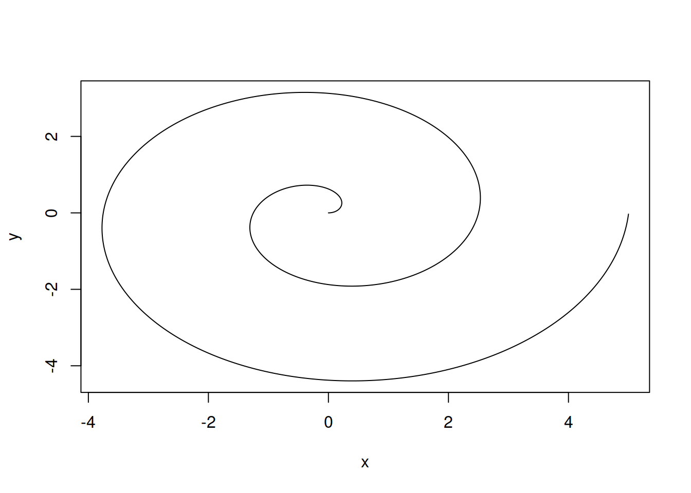

The logarithmic spiral has a polar equation of \[r = a e^{b\theta}\] where \(r\) is distance from the origin, \(\theta\) is the angle from the x-axis, and \(a\) and \(b\) are constants. Source
We can write the logarithmic spiral equation in Cartesian coordinates as: \[\begin{array}{c} x &= r \cos\theta = a \cos\theta e^{b\theta}\\y &= r \sin\theta = a \sin\theta e^{b\theta}\end{array}\]
We can implement this spiral in R by first defining it in polar coordinates and then converting the polar coordinates into a sequence of Cartesian points that should be connected by line segments.
# Define the angle of the spiral (polar coords)# go around two full times (2*pi = one revolution)theta <-seq(0, 4*pi, .01)# Define the distance from the origin of the spiral# Needs to have the same length as thetar <-seq(0, 5, length.out =length(theta))head(cbind(r, theta))
While we could probably figure out how to make R plot in polar coordinates, it’s much easier to plot in Cartesian coordinates (because that’s what most plotting packages are set up to do). So we need to convert into Cartesian (XY) coordinates before we try to plot things.
Notice how my R code is in separate chunks, and between chunks everything is annotated?
# Now define x and y in cartesian coordinatesx <- r *cos(theta)y <- r *sin(theta)head(cbind(x, y))
x y
[1,] 0.000000000 0.000000e+00
[2,] 0.003980693 3.980825e-05
[3,] 0.007960191 1.592251e-04
[4,] 0.011937301 3.582265e-04
[5,] 0.015910830 6.367728e-04
[6,] 0.019879583 9.948083e-04
With x and y defined, we can create a line plot. By default, R will create a scatterplot, so we use type=l to tell R to create a line plot instead.
plot(x, y, type ="l")

With markdown, I can create nice formatting with simple text -
First header
Second header
A really nice quote ### Third header
some code from an unknown language
I also like the ability to make
numbered
lists
but sometimes you want to make a
bulleted
list
I have to put a blank line between the text and the list for the formatting to work just right. When in doubt, add a blank line :).